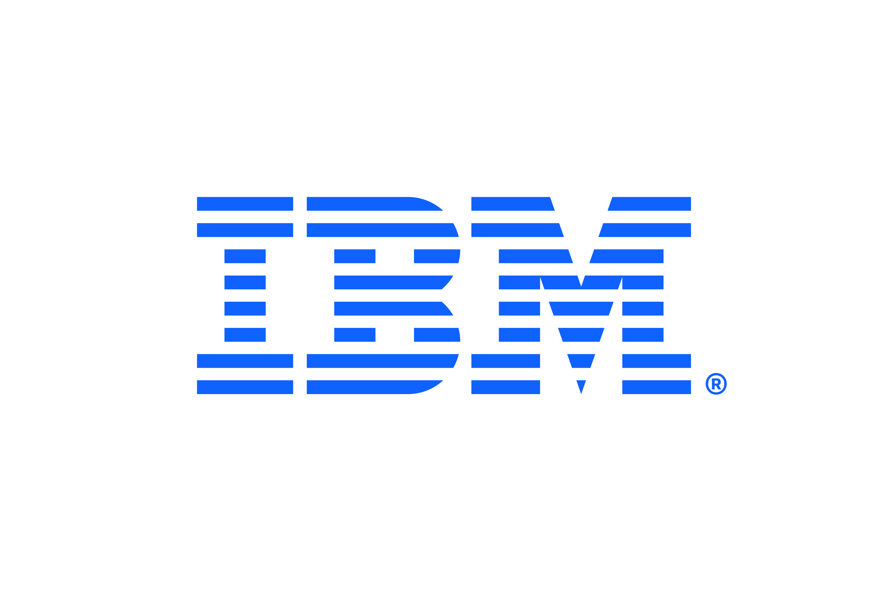

Mais de 50 anos sustentando o crescimento.
Desde 1952, o Banco do Nordeste cresceu até se tornar o maior banco de desenvolvimento regional da América Latina. Por mais de cinco décadas, o Mainframe IBM é a base dessa trajetória — e da confiança que o cliente final sente todos os dias.
Estabilidade que o cliente final sente
Parceria IBM + BNB
Acompanhando o crescimento do banco desde as primeiras décadas.
Disponibilidade no Mainframe
Continuidade de operação como base, não como exceção.
Economia por mês
Gerada pela automação de processos com IBM RPA.
Tudo o que mantém o banco de pé
Todo o core no Mainframe
Roda com segurança e estabilidade, ininterruptamente.
+3.500 jobs diários
Extração e movimentação de dados em escala.
Processos críticos
Cadastro de clientes, concessão de crédito e mais.
Automação operacional
Ex.: abertura e fechamento de agências em toda a rede.
Risco de crédito
Execução dos modelos de risco do banco.
Governança de APIs
Plataforma de gestão e governança para o ecossistema aberto.
O futuro do Mainframe se chama Linux.
O mesmo alicerce de confiança, agora com a experiência de nuvem que os times esperam — sem abrir mão de segurança, escala e soberania.
Um servidor no lugar de trinta e dois
Consolidação
O Linux no Mainframe entrega o que 32 servidores x86 fariam.
Equivalem a 2.048 cores x86
Densidade de processamento em uma fração do espaço e da energia.
Experiência cloud-native
A mesma experiência de nuvem, on-premises, com Red Hat OpenShift.
Para onde podemos ir a seguir
Vamos escrever o próximo capítulo.
Proponho uma sessão de arquitetura para priorizar os temas, desenhar a jornada de modernização e definir a primeira entrega de valor.